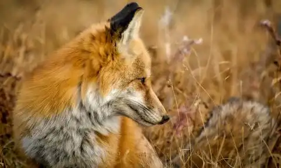
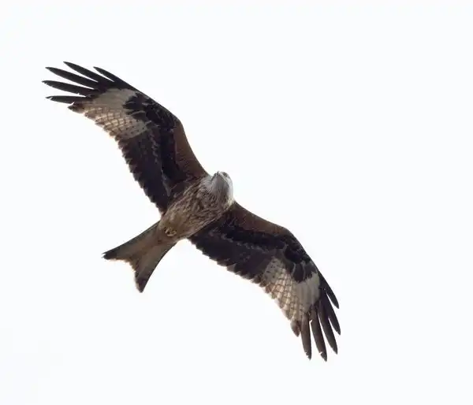
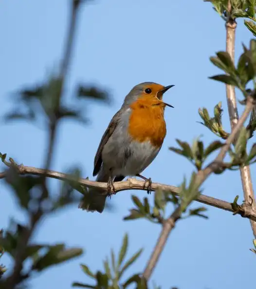
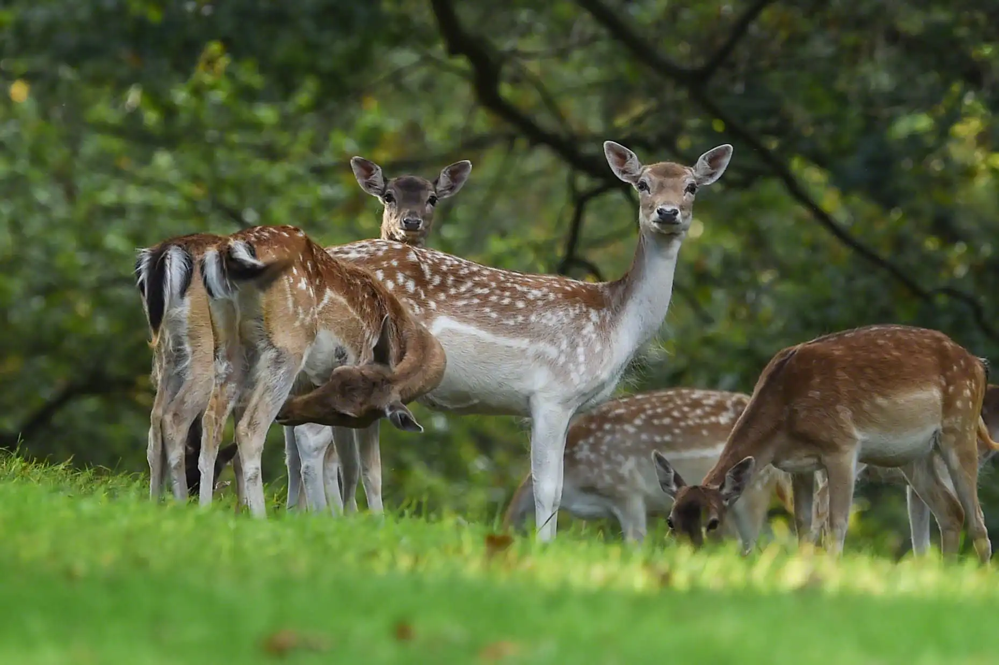
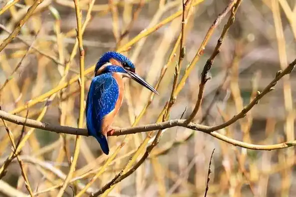

Fox
Foxes tend to be a regular occurrence around Stamford for anyone who lives near a
field or visits a field. These Red mammals can be found prowling around
fields, hunting for mice or other prey they deem acceptable.
Foxes are small to medium-sized, omnivorous mammals belonging to several genera
of the family Canidae. They have a flattened skull, upright triangular ears, a
pointed, slightly upturned snout, and a long bushy tail (or brush).
Black & Red Kites
Due to the vast fields around Stamford, Black & Red Kites like to take
up the sky, prowling for prey. These birds are great for any bird fanatic who
wants to check off another bird on their checklist.
Black & Red Kite's are relatively uncommon, but can be identified due to their
medium-size. From a distance, it appears almost black, with a light
brown bar on the shoulder. The plumage is actually dark brown, with scattered
light brown and rufous markings, particularly on the head, neck and underparts.
The tail is forked and barred with darker brown.


Robins
You can find these birds all over Stamford, usually nesting or perched in trees.
You can generally locate them by the sound of them singing. They can be found
anywhere within Stamford, ranging from the car park of Waitrose to the tree's
along with the Meadows.
The National Bird and a common favourite, the Robin is easily recognised by most
people. The Robin is a plump bird with bright orange-red breast, face, throat
and
cheeks edged with grey, a white belly and olive-brown upper parts.
Deers
Deer are surprisingly common in Stamford, so long as you head over to Burghley
park during the summer. Burghley Park holds a plethora of wildlife, ranging from
Sheep, Deers, Stags and fish, over to a wide variety of different birds that can
be
seen sawing over the skies.
You can find Deer strolling around the Burghley Park grounds, often
grazing on
the grass. They are typically contained within the area close to the main house,
but
sometimes they can manage to find themselves a way out from there.


King Fisher
King Fishers are a rare but delightful bird within the Stamford area.
Normally found perched over Rivers, such as the River Welland, these birds can
be found near a variety of different locations.
Kingfishers are small unmistakable bright blue and orange birds of slow moving
or still water. They fly rapidly, low over water, and hunt fish from riverside
perches, occasionally hovering above the water's surface.